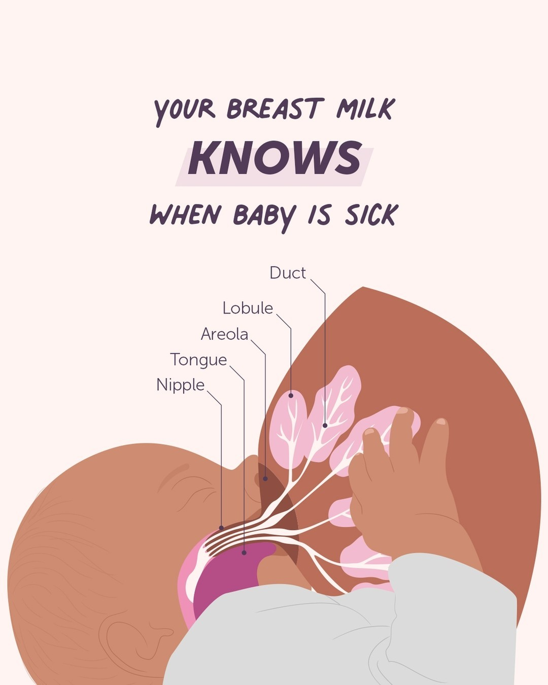
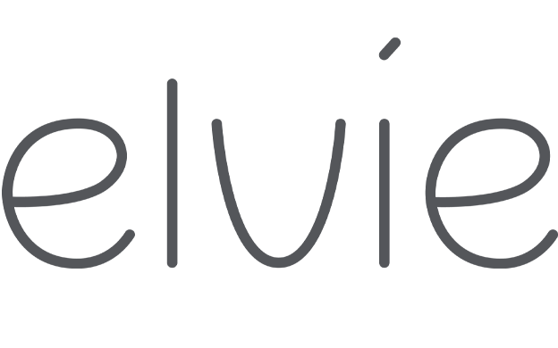
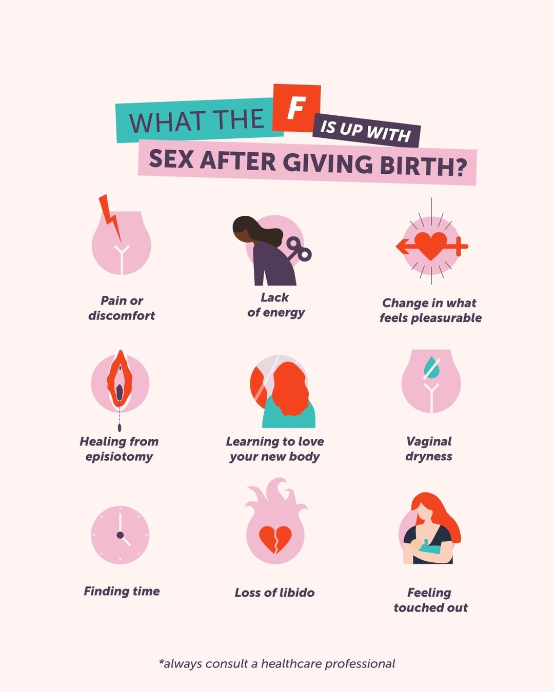

Campaign Marketing Manager
Charlie
Harlow


Scroll
Campaign Marketing Manager
150+ briefs/year · +6pts logo awareness

16.6M views · £531K+ EMV

613K reach · 1M+ video views

+345% YoY blog sessions from organic social

3.9M reach · 9.1M TikTok impressions

6.5M views · £0.01 per view
"Charlie is a joy to work with; interesting, curious, and fun. She has been integral to evolving how we work with creators at CoppaFeel!, reducing agency support and bringing relationship management in house, delivering authentic partnerships and enhanced ROI for the charity. Charlie is also a valued member of the core team that delivers CoppaFeel!'s annual campaign; ensuring it's diverse, embedded in youth culture and resonates with the audiences we serve."
"Charlie joined Dojo in a crucial period of growth, focusing on a high-value customer vertical and with minimal guidance was able to deliver a comprehensive content strategy that nailed the specific needs and nuances of our customers. Her ability to cut through ambiguity and get to the root of the problem has been extremely impressive, and I've seen her navigate stakeholder relationships with ease, building trust quickly even at a senior level."
"Charlie is an incredibly smart, tenacious and curious professional who from the get-go instinctively 'got' how to develop a brand's social media and has shown a real flair for initiating and developing disruptive and effective creative content. She is an absolute star and an absolute pleasure to work with."
"Charlie is a creative, personable and highly motivated Marketing Manager who consistently brings a positive, solutions-focused mindset to her work. She is thoughtful in her approach - taking time to reflect, ask insightful questions and ensure she delivers work of the highest standard. Her attention to detail and commitment to brand integrity make her an outstanding brand guardian."
"Charlie is smart, proactive and an incredibly strong communicator. She is a naturally strategic thinker and is highly skilled at translating complex data sources into actionable customer insights. She is also well liked by everyone she works with. Any business is lucky to have her as a part of their team."
"Charlie has a knack for collaboration and a great ability to rally teams behind campaigns. She always wrote clear and concise creative briefs, ensuring that every project aligned with our brand vision and objectives. I highly recommend her for roles requiring top-notch content marketing expertise and collaborative leadership."
"I was continually impressed by her decision-making abilities, her understanding of audience and brand, and her mix of creative and analytical thinking. Her approach to wider content strategy shows a very high level of insight. Charlie is proactive and eager to learn, and she's a genuinely lovely person to work with."
← Scroll to read more →
I lead integrated marketing campaigns from strategy through to delivery, bringing together brand, creative, creators and paid media to deliver work that people trust.
Over the past 5+ years, I've worked across health, fintech and purpose-driven organisations including Elvie, CoppaFeel! and Dojo, turning ambitious ideas into well-executed campaigns, launches and brand moments. My experience spans integrated marketing, creator strategy and community building.
A lot of my work sits in areas where messaging needs to be handled carefully, particularly across health, behaviour change, and underrepresented audiences. Because the challenge isn't just getting attention. It's building campaigns people trust.
Open to full-time roles and freelance partnerships with ambitious, purpose-led brands.
The UK's only youth-focused breast cancer awareness charity.
Scaled CoppaFeel!'s creator programme in-house, establishing it as a core channel for the annual campaign.
The charity's key awareness moment required storytelling to drive early detection behaviours. The creator programme had previously been managed externally, limiting integration and efficiency.
Led the creator programme end-to-end, including strategy, creator sourcing, briefing, relationship management, paid amplification, and performance tracking.
Established creators as a core campaign channel, delivering scale, cultural relevance, and improved efficiency. Creator content generated 1.8× engagement lift overall versus organic baseline, with standout performer @twinsum achieving 3.49×.
Campaign hero asset (creative agency)
Creator: @diaryroom
Creator: @twinsum
Creator: @kareenajethwa
"Charlie is a joy to work with; interesting, curious, and fun. She has been integral to evolving how we work with creators at CoppaFeel!, reducing agency support and bringing relationship management in house, delivering authentic partnerships and enhanced ROI for the charity. Charlie is also a valued member of the core team that delivers CoppaFeel!'s annual campaign; ensuring it's diverse, embedded in youth culture and resonates with the audiences we serve."
Martine O'Donnell — Marketing Director, CoppaFeel!

Global femtech brand and Deloitte UK Technology Fast 50 company.
Built and scaled a cost-efficient UGC programme to fuel organic social, paid social and product launches.
Existing production models were too slow and expensive to meet the demands of short-form content.
Led strategy, built a creator network, and managed relationships over 1–2 years.
Created a scalable, cost-efficient content engine aligned to platform behaviour and performance goals, exceeding the 2.2M view target (at £0.03/view) with 6.5M views at £0.01/view.
Creator: @morganbutlerblog
Creator: @aratakyiesq
Creator: @nicole_moses
"Charlie is an incredibly smart, tenacious and curious professional who from the get-go instinctively 'got' how to develop a brand's social media and has shown a real flair for initiating and developing disruptive and effective creative content. She is an absolute star and an absolute pleasure to work with."
Gemma Buggins — Global Marketing Director, Elvie
The UK's only youth-focused breast cancer awareness charity.
Led a targeted creator campaign engaging young people with South Asian heritage with breast health messaging in culturally relevant formats, shaped through audience focus group.
Research identified lower awareness and self-checking behaviour, partially driven by a lack of culturally relevant representation in existing health messaging and materials.
Owned strategy, creator management, and paid social execution end-to-end.
Demonstrated how culturally specific, insight-led campaigns can drive engagement and reach underrepresented audiences.
Part 1 — Awareness
@nishahmedd
@iconicakes
Part 2 — Checking Guidance
@nishahmedd
@iconicakes
Part 3 — Signs
@nishahmedd
@iconicakes
"So important, love this Nish 🖤🖤🖤🖤"
"So many people need to hear this!"
"An amazing video and even more amazing reminder 👏🏽👏🏽👏🏽"
"Genuinely didn't know how to check my chest before this!"
"Charlie is committed to equity, diversity and inclusion. She led an impactful project engaging a South Asian community with health messaging, incorporating focus groups to ensure the work was relevant, respectful and effective. She also independently developed expertise in paid media, particularly across TikTok and Instagram, using a test-and-learn approach to optimise performance. Her reporting is consistently reliable and she has a strong grasp of objectives and measurement."
Eleanor Sethi — Head of Marketing, CoppaFeel!
Global femtech brand and Deloitte UK Technology Fast 50 company.
Led a digital campaign establishing postpartum sexual wellbeing as a new content pillar for the brand.
The brand aimed to expand into a sensitive, underrepresented topic requiring a credible and insight-led approach.
Owned strategy, research, execution, and reporting end-to-end.
Expanded brand positioning through insight-driven and culturally sensitive strategy. Campaign messaging framework adopted as a core ongoing content pillar.
Creator: @hannahwitton
Creator: @hannahwitton
Creator: @_caliryan

"I am 8 months pp and I am still totally uninterested in sex. My husband has been amazing and supportive, but internally I've been worried that something is wrong with me and our relationship. This video made me feel so validated and normal. Thank you for normalising all pp situations. 💗"
"Oh man I thought I was broken until you explained the desire part. I'm not broken thank god"
"I had the pleasure of working alongside Charlie at Elvie, where she was pivotal in our content marketing efforts. Charlie has a knack for collaboration and a great ability to rally teams behind campaigns. She always wrote clear and concise creative briefs, ensuring that every project aligned with our brand vision and objectives and setting the stage for success."
Catalina Costa — Senior Creative Designer, CoppaFeel!
"Charlie is smart, proactive and an incredibly strong communicator. She is a naturally strategic thinker and is highly skilled at translating complex data sources into actionable customer insights. She is also well liked by everyone she works with. Any business is lucky to have her as a part of their team."
Mimi Williams — Global Senior Brand Manager, Elvie
Global femtech brand and Deloitte UK Technology Fast 50 company.
Developed a cross-channel content strategy using educational social content to drive audiences towards long-form blog content.
Existing blog, social, and email content operated separately, limiting reach and reducing the impact of educational content.
Led the development of a more connected content approach across social, blog, and email channels.
Improved the visibility and performance of educational content by creating a more connected cross-channel strategy.
"I had the pleasure of managing Charlie in 2023 and I was continually impressed by her decision-making abilities, her understanding of audience and brand, and her mix of creative and analytical thinking. Her approach to wider content strategy shows a very high level of insight. Charlie is proactive and eager to learn, and she's a genuinely lovely person to work with."
Hannah Hughes — Content & Community Lead, CoppaFeel!
The UK’s only youth-focused breast cancer awareness charity.
Owned brand guardianship and design operations across the whole organisation, turning an ad hoc request process into a structured, scalable system.
Following a brand refresh, design requests from across the organisation lacked a clear process, creating inconsistency, bottlenecks and inefficient use of a small design team’s time.
Sole point of contact for all organisation-wide design briefs. Owned the design process end-to-end and managed a freelance design team.
Turned a reactive design function into a structured, scalable process, delivering 150+ briefs a year within budget, while brand recognition rose 6 percentage points in the year following the rebrand.
"Charlie identified that due to the volume of design briefs that were coming in from all parts of the organisation, we needed a much more streamlined briefing and feedback process, a process that worked not only for me as the designer, but for the organisation to use and feedback on their projects.
Charlie created a new briefing form, consulting me on what details I find most useful at the start of a project, which was then rolled out as part of a wider system across the organisation to great success. Individuals submit their briefs and deadlines, and all feedback and progress is tracked within a task - it has really improved how I work across the CoppaFeel! organisation. Not only is there full transparency of my workload, but it has also streamlined the feedback process no end, which therefore speeds up the overall completion of tasks."
Elizabeth Mellor — Freelance Senior Graphic Designer, CoppaFeel!
"The healthiest 'check your chest' promo I've ever seen!"
"The best awareness video I have seen in some time 💗"
"Shout it louder ladiesss 💃🏼💃🏼!! Thank you for spreading awareness 💕💕"